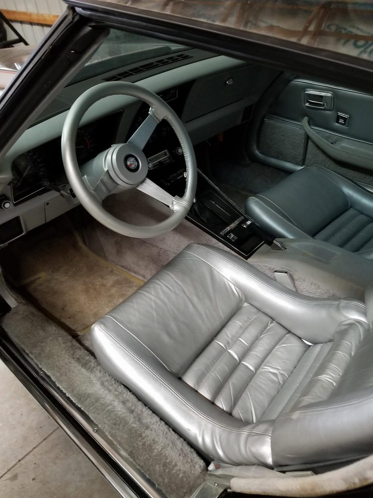
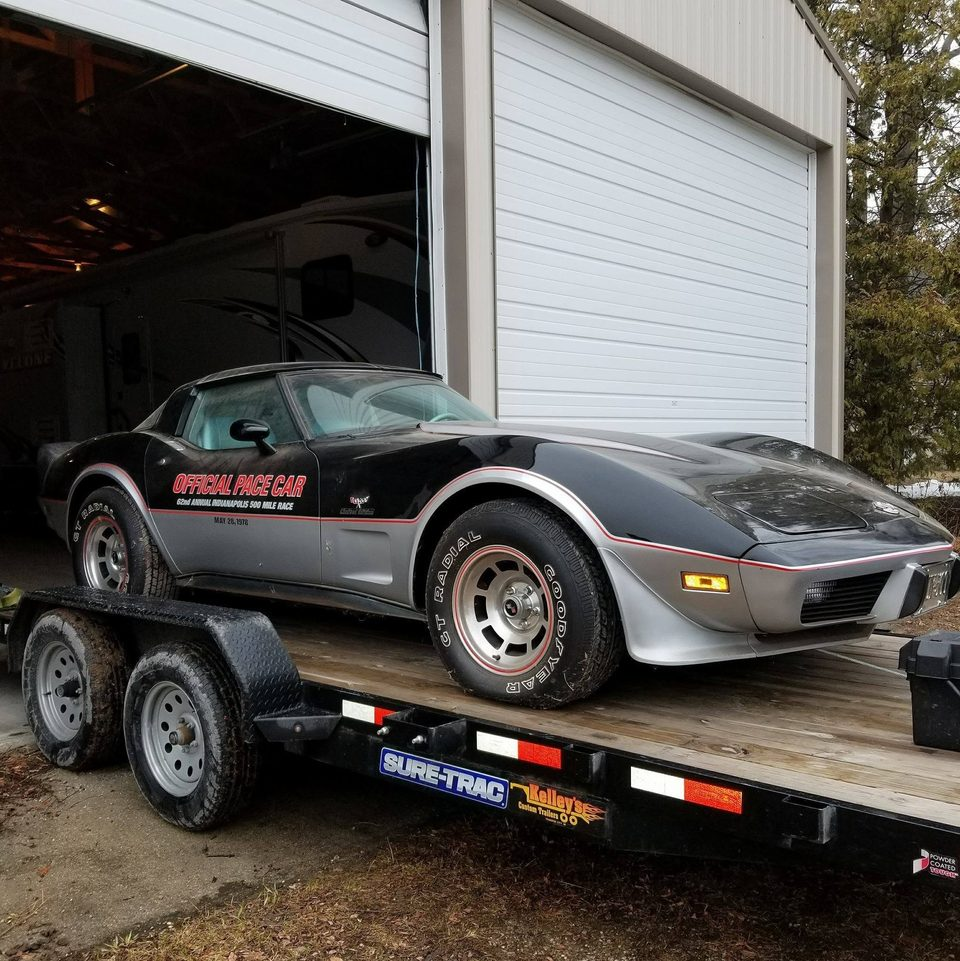
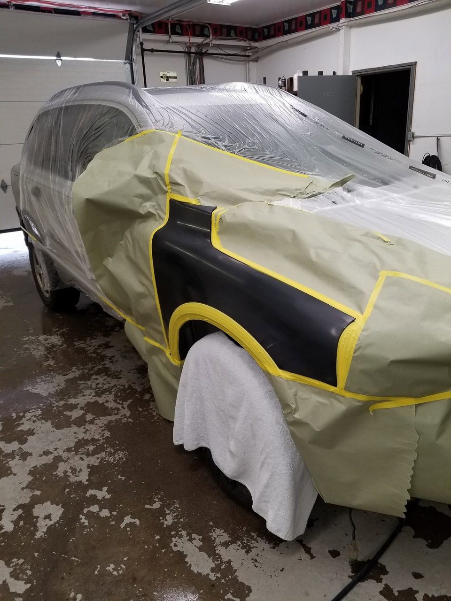
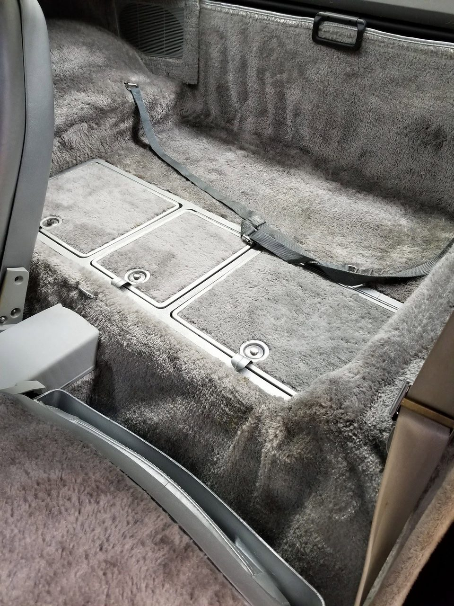
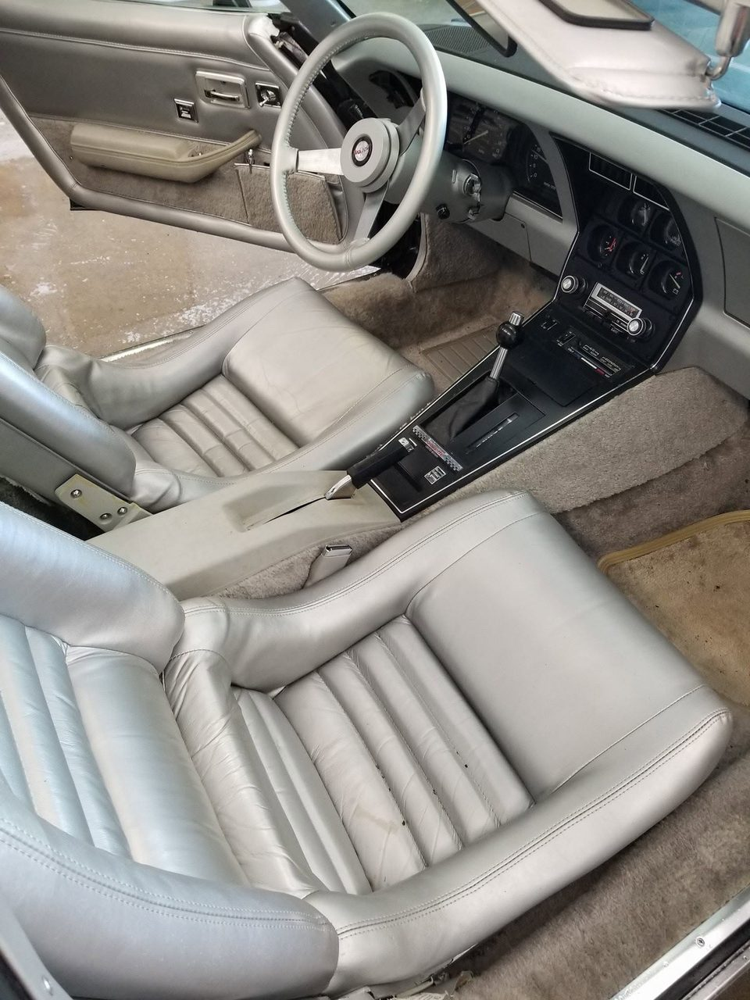
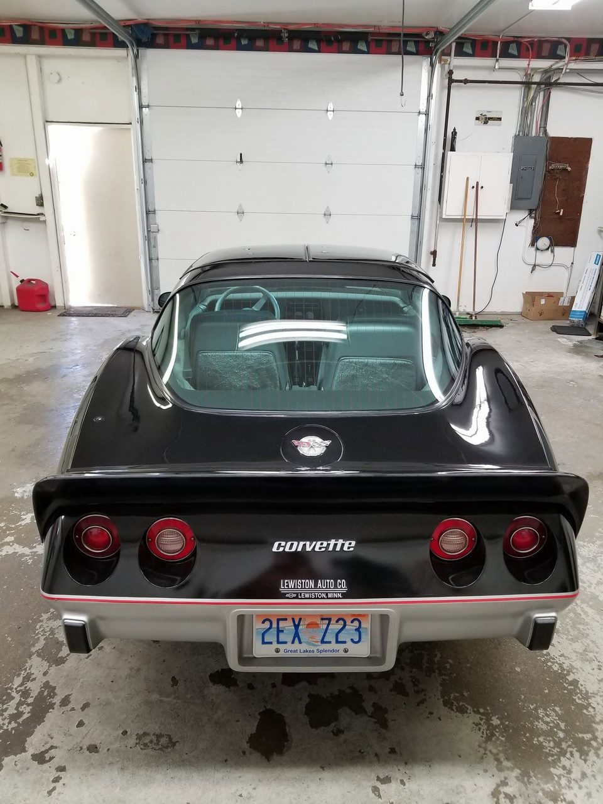
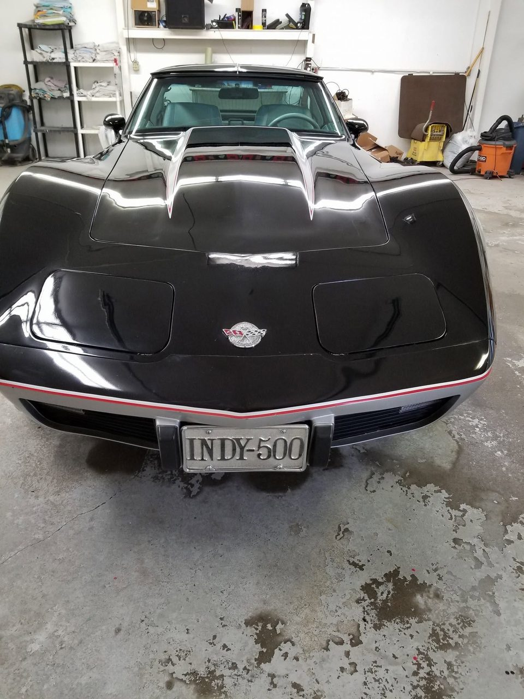
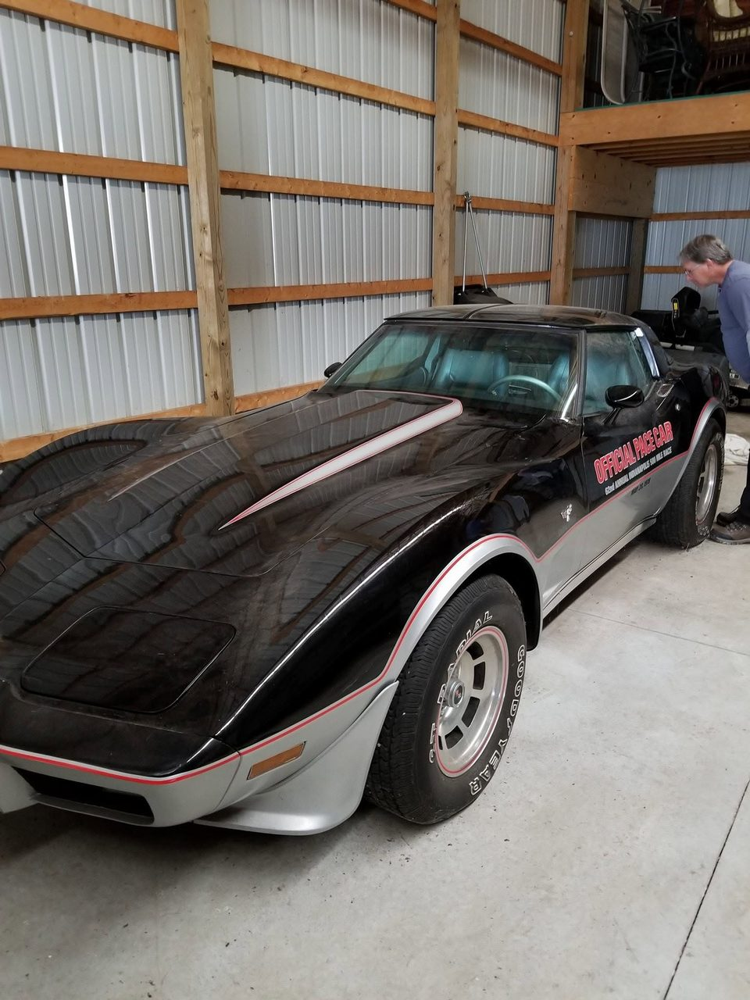

Pace Car
1978 Corvette Indy 500 Pace Car Edition · Restoration & Detail

The Story
Out Of Storage. Back To The Brickyard.
Chevrolet built the Pace Car Edition to mark the 1978 Indianapolis 500 — black over silver, split by a red pinstripe, with the pace car lettering on the door. This one had spent a long time parked, and it showed.
It came to us out of a barn, hauled in on a trailer with dust on the glass and a cabin that had not seen daylight in years. The interior came out entirely — carpet, trim, the lot — and went back in clean.
The body was masked and refinished where it needed it, the silver lowers brought back, and the graphics and pinstripe put right. It sits in the shop now looking the way it did on the showroom floor, down to the INDY-500 plate on the nose.
Build Sheet
The Specs
- ✓1978 Pace Car EditionOne of the limited run built for the 62nd Indianapolis 500.
- ✓Recovered From StorageHauled in on a trailer after years parked and gone through end to end.
- ✓Interior Stripped & RebuiltCarpet and trim out, cleaned back, and refitted.
- ✓Black Over Silver RefinishedTwo-tone corrected and the red pinstripe put right.
- ✓Pace Car Graphics RestoredDoor lettering returned to the correct period layout.
- ✓Photo-DocumentedBarn to bay to finished, captured throughout.
The Journey
Build Gallery







